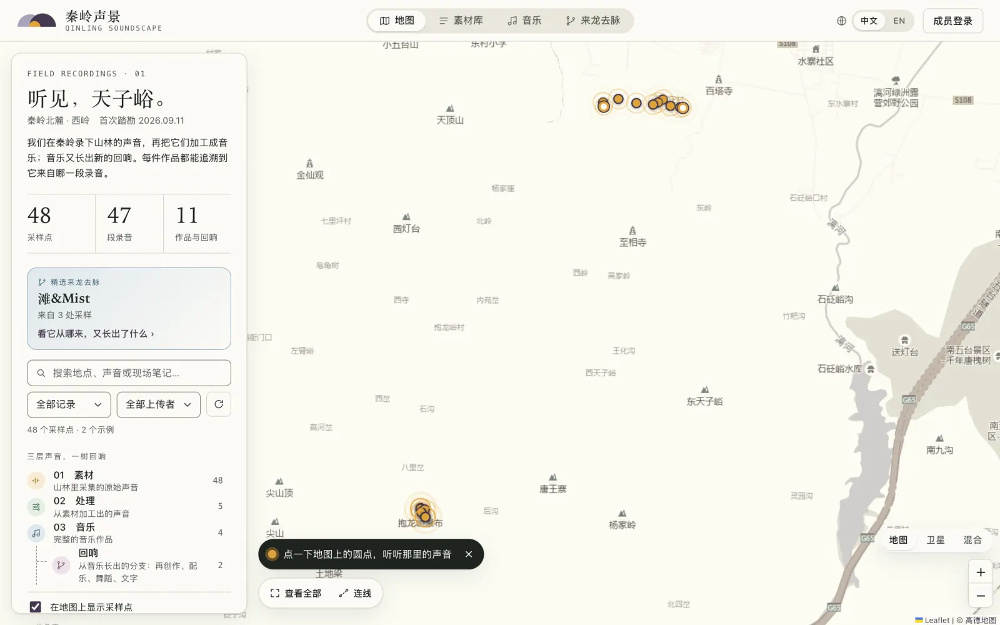
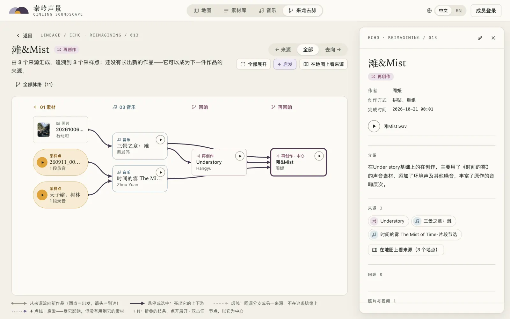
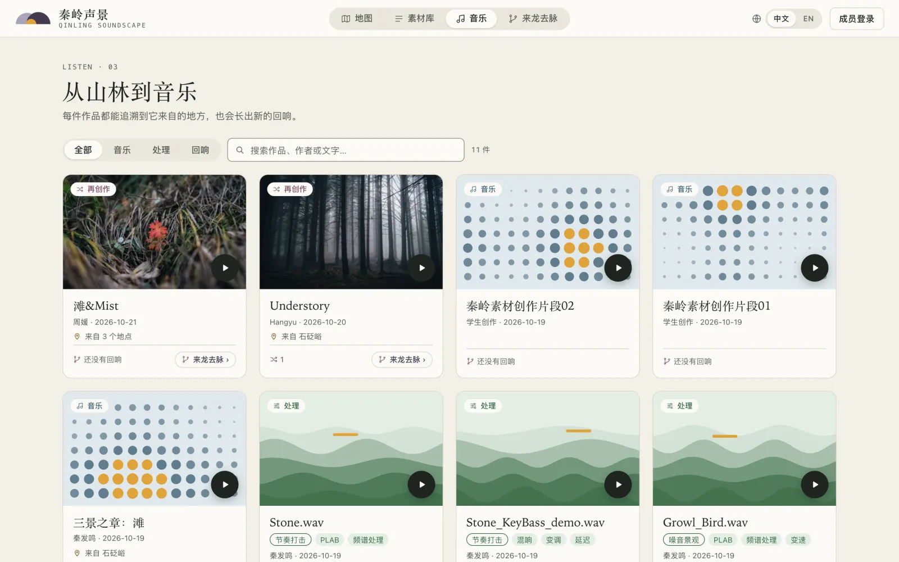
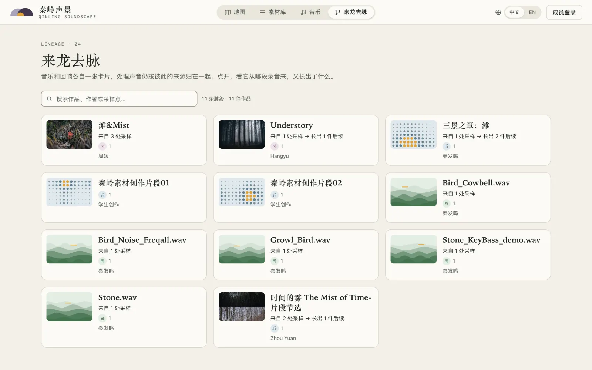

秦岭声景地图Qinling Soundscape
我们在秦岭山里录下的声音，一个个钉在地图上：天子峪的树林、抱龙峪的瀑布、山脊上的风。原始录音被加工成新的声音，再被做成音乐，音乐又长出新的回响：再创作、配乐、舞蹈、文字。每一件作品都能顺着线找回它出自哪一段录音。
Forest sounds our team recorded in the Qinling mountains, pinned on a map. Raw recordings become processed sounds, then music, then new echoes, and every piece can be traced back to where it came from.

- 团队
- 我和学生们
- 目前
- 48 个采样点 · 47 段录音 · 11 件作品与回响
- 四层
- 素材 → 处理 → 音乐 → 回响
- 做法
- FastAPI + SQLite + Leaflet，高德底图
长什么样What it looks like



为什么做Why I made it
一开始我们只是想去秦岭采些素材，做一个声景。我对声景的理解，很大程度来自谷歌地球的街景。可街景里是没有声音的。秦岭作为一个地方，完全可以从声音这一层被记录下来。
所以出发前我们定了一个规矩：开始录音时，先说清楚时间、地点、现在大概有什么声音，再用手机拍一张照片。这样以后每段录音都能自动转写、归类、打标签，照片还带着时间和 GPS。
你想，以前如果几个学艺术的、学音乐的，想要搭这样一个平台做这样一件事情，我觉得几乎是不可能的。……聊天、碰撞彼此的认知、连接彼此的想法，最终出来这样一个内容。我现在很确定地说，这就是未来的一种创作模式，尤其是团队合作的创作模式。
语音日记 · 2026.09.11
第一次从山里回来，我们在咖啡馆里聊。我把整段对话录下来交给 AI，不到半小时，第一版地图就上线了，每个成员都成了项目的共同维护者。
我不会写歌，也不会作曲，但我很会拍照片。有一次我把一张雾里的树林照片交给一位音乐家，请他看完随手在键盘上弹一段；那段旋律后来又被重新创作，最后用进了我在挪威森林里拍的纪录片。也许是一张照片，也许是一段声音，让一个普通人也走进了创作。“来龙去脉”这棵树，就是为了把这些启发一条条留下来。
怎么做的How it is built
成员在山里用手机直接上传录音、照片和现场笔记，自动带上位置。国内访问不了海外的地图和脚本，所以换成高德底图，地图库也放在自己的服务器上。我们还在试着给每件作品做数字存证，让“它出自哪一段录音”不只是网页上的一条线。